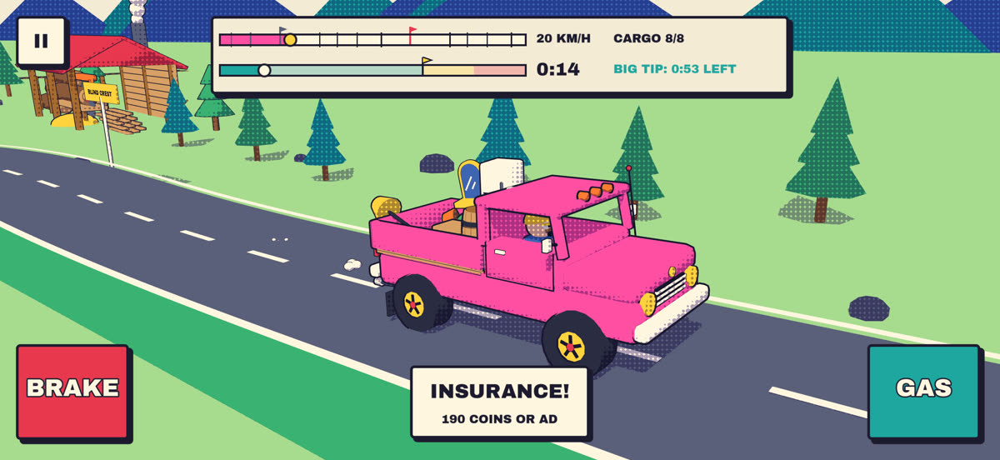

Hauligan
Pack it. Strap it. Floor it.

Need a hand?
Email will@blkmkt.app and say which phone or iPad you play on. If something went wrong in a ride, the order number and what happened help a lot.
Email supportCommon questions
- How do I play?
- Pick an order, drag the cargo cards onto the truck bed, strap down what matters and press GO!. Use GAS and BRAKE to get there before the time runs out. Settings → HOW TO PLAY shows the basics again.
- Why is the next region locked?
- A region opens once every order in the region before it has at least one star, and you pay its toll in coins.
- I bought No Forced Ads or the Starter Pack on another device.
- Open the SHOP and tap RESTORE PURCHASES while signed in to the same Apple Account. Coin packs are used up when bought, so they can't be restored.
- A purchase didn't arrive.
- Close and reopen the game, then try RESTORE PURCHASES. If it's still missing, email us. For refunds, Apple handles them at reportaproblem.apple.com.
- Can I turn off ads?
- No Forced Ads (or the Starter Pack) stops the ads between orders. Ads for HINT, DOUBLE IT!, INSURANCE and free coins only play when you choose them.
- How do I change my ad privacy choices?
- Tracking is under Settings → Privacy & Security → Tracking on your device. Details are in the privacy policy.
- Will deleting the app delete my progress?
- Yes. Progress is saved only on your device, so it can't be recovered after the app is deleted.